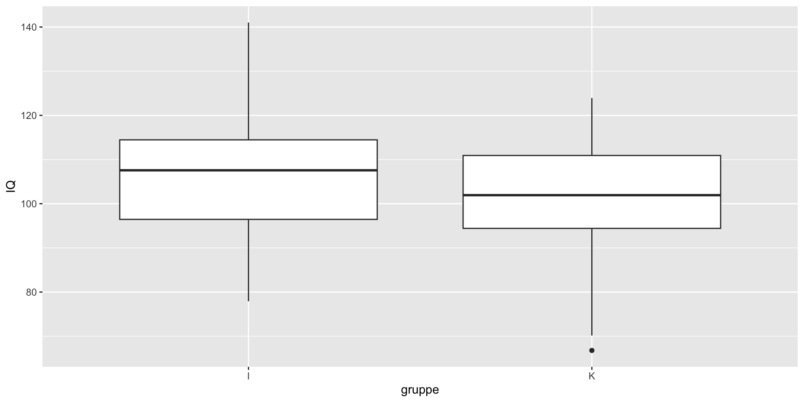
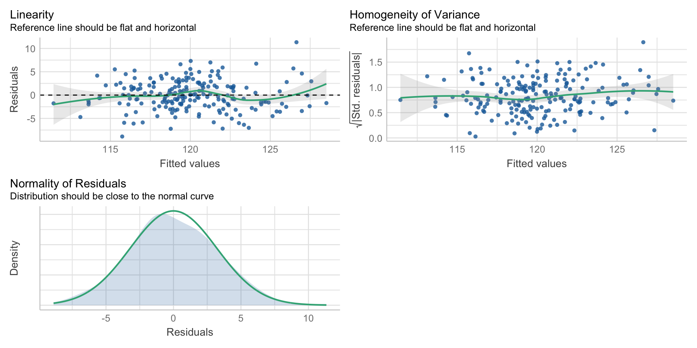
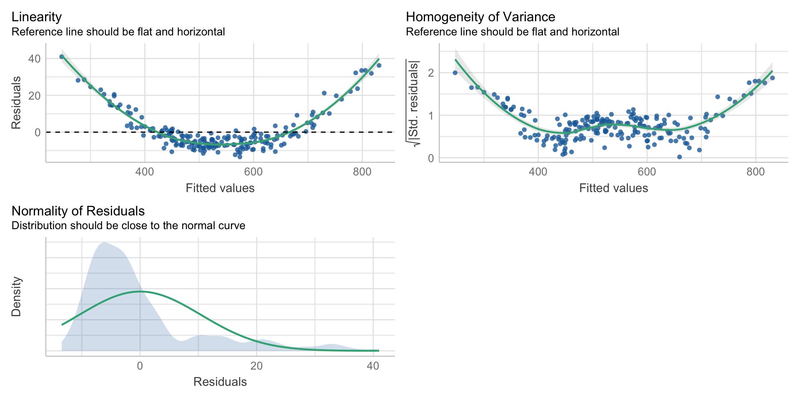
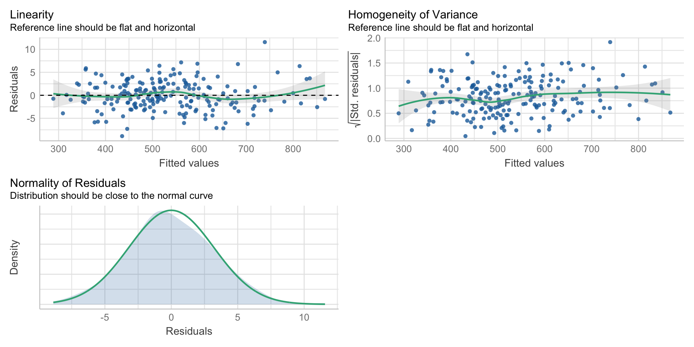

nK <- 50#antall i kontrollgruppen
nI <- 48#antall i intervensjonsgruppen
set.seed(1)#når vi simulerer så setter vi et seed for reproduksjon (alle får likt)
iqK <- rnorm(nK, mean=100, sd=15)# generere scorer kontroll
iqI <- rnorm(nI, mean=100+5, sd=15)## generere scorer intervensjon
simdata <- data.frame(gruppe=c(rep("K", nK)), IQ=iqK)
simdata <- rbind(simdata, data.frame(gruppe=c(rep("I", nI)), IQ=iqI))Digital samling 19.03. Forskningsmetoder i psykologi, replikasjonskrisen og å sjekke antagelser for regresjon
Om meta analyser og Cohens d
Metaanalyse og effektstørrelse
De siste årene har oppsummeringsartikler blitt vanlige
Metaanalyse. Sammenfatter funn av mange kvantitative studier. Vekter hver studie og beregner en felles effektstørrelse. I systematisk review så beregnes som regel ikke en felles effektstørrelse
Effektstørrelse. Sier hvor mange standardavvik en avhengig variabel øker som følge av at man øker en uavhengig variabel med ett standardavvik
Dersom den uavhengige variabelen er binær så er sier effektstørrelsen hva som skjer dersom den uavhengige variabelen er lik 1 vs lik 0. Gjelder når vi ser på effekten av en intervensjon (binært: kontroll vs intervensjon)
Cohens \(d\)
Vanligste effektstørrelse er Cohens (1988) \(d\). Kontroll vs intervensjon:
\[ d =\frac{\overline{x_I}-\overline{x_K}}{s_p}\] Hvor \(s\) er den kombinerte (pooled) standardavviket i de to gruppene.
Cohen ga følgende tommelfingerregel for størrelsen
- Liten: d = .2
- Medium: d = .5
- Large d = .8
Simulere data fra en mindfulness intervensjon
Vi ser på IQ score. Kontrollgruppen er hentet fra en populasjon der IQ er 100 i snitt og med standardavvik 15. Vi tenker oss at en mindfulness-intervensjon gir en forventet økning i IQ på 5 poeng.
Se på forskjellene og gjøre en t.test
library(tidyverse)
ggplot(data=simdata, aes(x=gruppe, y=IQ))+geom_boxplot()
t.test(IQ~gruppe, data=simdata)
Welch Two Sample t-test
data: IQ by gruppe
t = 2.1422, df = 92.7, p-value = 0.03479
alternative hypothesis: true difference in means between group I and group K is not equal to 0
95 percent confidence interval:
0.4275016 11.2867599
sample estimates:
mean in group I mean in group K
107.3639 101.5067 Beregner Cohens d i R: 0.44
library(psych)
cohen.d(IQ~gruppe, data=simdata)Call: cohen.d(x = IQ ~ gruppe, data = simdata)
Cohen d statistic of difference between two means
lower effect upper
IQ -0.84 -0.44 -0.04
Multivariate (Mahalanobis) distance between groups
[1] 0.44
r equivalent of difference between two means
IQ
-0.21 Trinn i en metaanalyse
Definer forskningsspørsmålet og konstrukter som skal være med
Litteratursøk (systematisk og reproducible). Inklusjonskriterier defineres
Bestem et mål for effektsstørrelse og metodologi (regresjon meta-analyse eller sem-metanalyse)
rapportere resultater
Noen eksempler på metastudier
Meta-metaanalyse av Undervisningsformer i høyere utdanning
En oversikt over metoder brukt i psykologisk forskning
Flest kvantitative studier i psykologi
Scholtz, Klerk, and Beer (2020) gikk gjennom forskningsmetoder i en systemised revies av 999 artikler i topp fem journaler over 5 år
” researchers are more likely to use quantitative research methods (90.22%) compared to all other research methods. Qualitative research was the second most common research method but only made up about 4.79% of the general method usage. Reviews occurred almost as much as qualitative studies (3.91%), as the third most popular method. Mixed-methods research studies (0.98%)”
Oversikt over kvantitative metoder i ledende kanadiske journaler
Counsell, Harlow, et al. (2017) gikk gjennom mest brukte statistiske metoder i kanadiske psykologi journaler: ANOVA, t-test og multippel regresjon
APA anbefaler å rapportere p-verdier + konfidensintervall+ effektstørrelser.
Endel metodeforskere mener at effektstørrelsen med tilhørende konfidensintervall er nok (se side 2 i artikkelen)
Altfor få studier rapporterer missing data og sjekk av statisiske forutsetninger
Om replikasjon
Replikasjonskrisen
Nosek et al. (2022) diskuterer replikasjon og reproduksjon av psykologiske forskningsfunn
Replikasjon: Å imitere en studie med nye data for å bekrefte at funnet kan gjenskapes. Gjennom 2010 årene ble flere replikasjonsstudier utført. Mange publiserte funn ble ikke replikert! (replikasjonskrisen)
Camerer et al. (2018) replikerte 21 eksperiment fra to toppjournaler (Nature og Science) bare 62% var signifikante i samme retning. Effekstørrelsene mye mindre.
Publikasjonsbias
Nosek et al. (2022) (side 724) nevner at de fleste studier har lav teststyrke (mindre en 50%). Da skulle man forvente at mer enn halvparten av studiene rapporterer om ikke-signifikant funn. Men ca 90% av funnene i forskningsartikler er signifikante. Dette tyder på at publikasjonsbias eksisterer!
En studie som har et positivt funn (forkaste \(H_0\) siden p-verdi < 0.05) har en større sjanse til å bli antatt i en journal enn en studie med nullfunn…
Det øker sjansen for at effekter som i virkeligheten er nær null kan framstå som viktige i forskningslitteraturen
Sjekke forutsetninger for multippel regresjon
Forutsetninger for multippel regresjon
p-verdiene og konfidensintervaller for stigningstallene i regresjon er bare til å stole på dersom vi har
- Linearitet
- Homoskedastiske feilledd
- Normalfordelte residualer dersom \(n\) er lav
Vi begrenser oss til disse tre forutsetningene her.
Simulere data fra en perfekt modell
Vi simulerer et datasett som kommer fra en tenkte regresjonsmodell av hvordan IQ forklares av mattescore og størrelse på hjernen. (ikke realistisk: 1 kg mer hjerne gir 10 ekstra IQ poeng. 1 ekstra mattescore gir 1 ekstra IQ)
set.seed(1)
n <- 200#deltagere
mattescore <- rnorm(n, mean=20, sd=3 )
hjerne <- rnorm(n, mean=1.4, sd=.1)
IQ <- 100+10*(hjerne - 1.4)+1*mattescore+rnorm(n, mean=0, sd=3)
iqdata <- data.frame(IQ, hjerne, mattescore)
model <- lm(IQ~hjerne+mattescore, data=iqdata)
summary(model)
Call:
lm(formula = IQ ~ hjerne + mattescore, data = iqdata)
Residuals:
Min 1Q Median 3Q Max
-8.8859 -1.9847 -0.1023 2.0382 11.3307
Coefficients:
Estimate Std. Error t value Pr(>|t|)
(Intercept) 85.41489 3.60945 23.664 < 2e-16 ***
hjerne 9.21176 2.25743 4.081 6.52e-05 ***
mattescore 1.07790 0.08186 13.168 < 2e-16 ***
---
Signif. codes: 0 '***' 0.001 '**' 0.01 '*' 0.05 '.' 0.1 ' ' 1
Residual standard error: 3.218 on 197 degrees of freedom
Multiple R-squared: 0.4881, Adjusted R-squared: 0.4829
F-statistic: 93.93 on 2 and 197 DF, p-value: < 2.2e-16Se på de 3 forutsetningene i de perfekte dataene
library(performance)#visuelt sjekke forutsetninger
check_model(model, check=c("linearity", "homogeneity", "normality"))
Simulere data fra en ikke-lineær modell
Vi lar effekt av mattescore være kvadratisk
set.seed(1)
n <- 200#deltagere
mattescore <- rnorm(n, mean=20, sd=3 )
hjerne <- rnorm(n, mean=1.4, sd=.1)
IQ <- 100+10*(hjerne - 1.4)+1*mattescore +1*mattescore^2+rnorm(n, mean=0, sd=3)
iqdata <- data.frame(IQ, hjerne, mattescore)
model <- lm(IQ~hjerne+mattescore, data=iqdata)
summary(model)
Call:
lm(formula = IQ ~ hjerne + mattescore, data = iqdata)
Residuals:
Min 1Q Median 3Q Max
-13.453 -6.745 -3.016 2.087 40.998
Coefficients:
Estimate Std. Error t value Pr(>|t|)
(Intercept) -334.2153 11.7887 -28.350 <2e-16 ***
hjerne 17.7435 7.3729 2.407 0.017 *
mattescore 41.8435 0.2674 156.511 <2e-16 ***
---
Signif. codes: 0 '***' 0.001 '**' 0.01 '*' 0.05 '.' 0.1 ' ' 1
Residual standard error: 10.51 on 197 degrees of freedom
Multiple R-squared: 0.992, Adjusted R-squared: 0.9919
F-statistic: 1.225e+04 on 2 and 197 DF, p-value: < 2.2e-16Se på de 3 forutsetningene i de ikke-lineære dataene
library(performance)#visuelt sjekke forutsetninger
check_model(model, check=c("linearity", "homogeneity", "normality"))
Her ser at ting går galt og vi kan ikke stole på modellen!
Man kan modellere den ikke-lineære effekten!
Vi lar effekt av mattescore være kvadratisk
iqdata$mattescore2 <- iqdata$mattescore*iqdata$mattescore
model_kvad <-
lm(IQ~hjerne+mattescore+mattescore2, data=iqdata)
coef(model_kvad)(Intercept) hjerne mattescore mattescore2
75.292997 9.417556 2.061208 0.975879 Regresjonsmodell med kvadratisk term er OK
check_model(model_kvad, check=c("linearity", "homogeneity", "normality"))
Referanser
Camerer, Colin F, Anna Dreber, Felix Holzmeister, Teck-Hua Ho, Jürgen Huber, Magnus Johannesson, Michael Kirchler, et al. 2018. “Evaluating the Replicability of Social Science Experiments in Nature and Science Between 2010 and 2015.” Nature Human Behaviour 2 (9): 637–44.
Counsell, Alyssa, Lisa Harlow, et al. 2017. “Reporting Practices and Use of Quantitative Methods in Canadian Journal Articles in Psychology.” Canadian Psychology/Psychologie Canadienne 58 (2): 140.
Nosek, Brian A, Tom E Hardwicke, Hannah Moshontz, Aurélien Allard, Katherine S Corker, Anna Dreber, Fiona Fidler, et al. 2022. “Replicability, Robustness, and Reproducibility in Psychological Science.” Annual Review of Psychology 73: 719–48.
Scholtz, Salomé Elizabeth, Werner de Klerk, and Leon T de Beer. 2020. “The Use of Research Methods in Psychological Research: A Systematised Review.” Frontiers in Research Metrics and Analytics 5: 1.